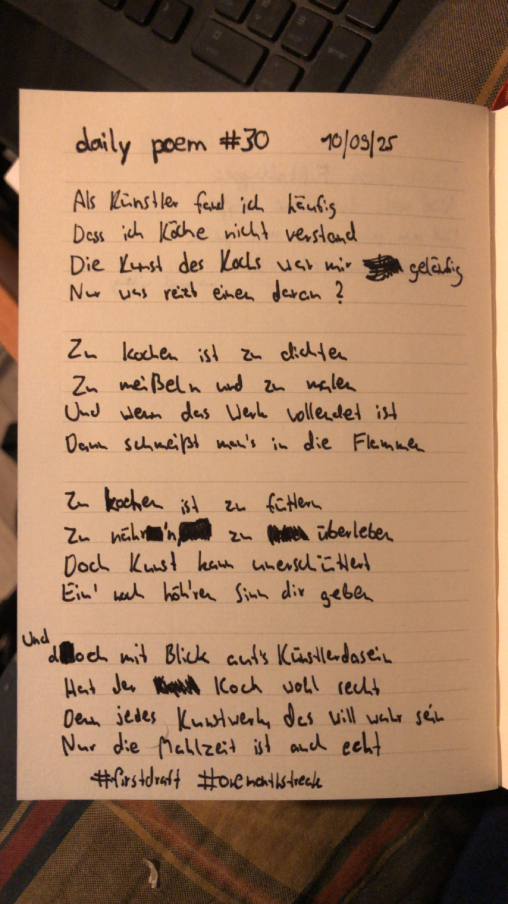

Die Kunst des Kochs
Als Künstler fand ich häufig,
Dass ich Köche nicht verstand –
Die Kunst des Kochs war mir geläufig,
Nur, was reizt einen daran?
Zu kochen ist zu dichten,
Zu meißeln und zu malen –
Und wenn das Werk vollendet ist,
Dann schmeißt man's in die Flammen;
Zu kochen ist zu füttern,
Zu nähr'n, zu überleben –
Doch Kunst kann unerschüttert
Ein' noch höh'ren Sinn dir geben.
Und doch, mit Blick auf's Künstlerdasein
Hat der Koch wohl recht –
Denn jedes Kunstwerk, das will wahr sein,
Nur die Mahlzeit ist auch echt.
